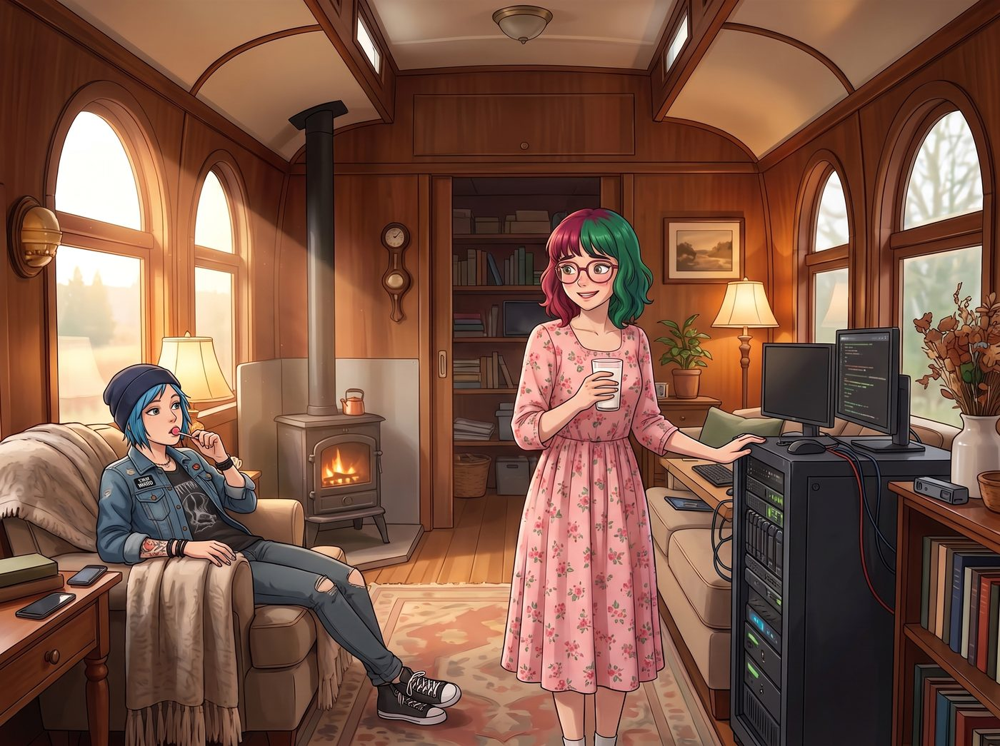

沉默的第二大腦

「等等，我一直想問。」某個閒散的午後，Chloe 叼著棒棒糖，難得表現出了超越街頭直覺範疇的好奇心，「妳每次搞定那些亂七八糟的技術活，速度快到根本不像人腦能反應過來的。妳到底是怎麼辦到的？別跟我說妳真的能在腦子裡瞬間寫完幾千行代碼。」
一、回收再利用的硬體
Lily 端著熱牛奶，愣了一下，隨即露出一個有些不好意思的微笑。她轉過頭，輕輕敲了敲工作台旁邊那個嗡嗡作響的黑色伺服器機櫃。
「還記得上次我們拿來測試賽博複製人的那台伺服器嗎？」Lily 問道。
Chloe 皺起眉頭，努力回想：「妳是說那台差點讓我們全部精神崩潰、最後被大家一致投票要銷毀的那台？」
「是的，那個複製人的人格模型，我們當時確實按照大家的決定，徹底格式化銷毀了。」Lily 推了推眼鏡，「不過那台伺服器的硬體本身沒有壞，晾在那裡挺浪費的。所以後來我用那顆空出來的算力，重新私有化部署了一套完全不同性質的東西——一套開源的先進語言模型工具，純粹是agent級別的任務執行框架，沒有任何人格、記憶或個性設定，就是一個乾淨的工具。它能自己拆解任務、呼叫工具、寫腳本、跑測試，然後把結果整理成我需要的格式。我只需要透過筆電、平板，甚至手機，隨時把任務丟給它，它就會在背景默默運算，把粗活都做完。」
Chloe 瞪大了眼睛：「所以那些什麼複雜的爬蟲腳本、數據交叉比對，其實有一半是它在幫妳做的？」
「差不多是這個意思。」Lily 點點頭，「我提供思路、法律邏輯和最終的判斷，它負責把繁瑣的技術執行部分加速完成。這是一種效率上的巨大提升，但……它並不是萬能的。」
二、被戳破的萬能幻想
一直在旁邊聽著的 Max 忍不住插話：「所以理論上，只要有它幫忙，妳想駭進什麼系統都行嗎？」
「不，Max 學姐，這是一個常見的誤解。」Lily 難得認真地搖了搖頭，「它的能力上限，還是要看它能不能連得上目標系統。它可以幫我快速分析一家中小企業防護鬆散的伺服器、寫一個爬取公開資料庫的腳本、或者交叉比對幾千份財務文件找出漏洞——這些都是需要大量重複性工作、但本質上並不違反物理定律的事情。」
Lily 頓了頓，語氣裡帶著一絲罕見的、近乎誠實的坦白：「但如果對方是真正做好硬體隔離、物理斷網的高安全等級系統，比如軍方或國家級基礎設施，它一樣束手無策。它不會憑空生出一條不存在的網路連線，也不能突破真正堅固的防火牆和實體安全措施。我之前跟妳們說過的那些聽起來很誇張的行動，能夠成功，往往是因為對方本身的資安措施就有明顯的疏漏，而不是我們真的擁有什麼能突破一切防護的黑科技。」
Victoria 端著咖啡走過來，若有所思地問：「所以說到底，妳這個秘密武器，其實也就是一個很厲害的自動化助理，而不是什麼無所不能的魔法棒？」
「精準的形容，Victoria 學姐。」Lily 露出了讚許的微笑，「它讓我原本需要花一整天手動完成的分析工作，縮短到幾分鐘。但它沒辦法幫我生出原本不存在的法律漏洞，也沒辦法讓一個本來就固若金湯的系統憑空出現破綻。我的核心優勢，始終是我對法規、財務邏輯和談判心理的理解——它只是負責把這些判斷，加速轉化成具體的執行結果而已。」
三、Frank的案例
「舉個例子好了，這樣比較好懂。」Lily 想了想，決定用一個更貼近生活的比喻，「Price 學姐以前欠過一個叫 Frank 的毒販一筆錢，對吧？」
Chloe 手裡的棒棒糖差點掉在地上：「等、等等，妳怎麼會知道 Frank 的事？！」
「先別急，學姐，讓我把重點說完。」Lily 沒有理會 Chloe 的驚恐，自顧自地繼續解釋，「像 Frank 那種情況，如果要解決——不管是談判還他錢、還是用某種方式讓他不再追討——這種事情，我的AI是完全做不到的。它沒有辦法替我去跟一個現實中的人面對面談判，沒辦法讀懂對方當下的情緒和肢體語言，更沒辦法在你來我往的心理博弈裡臨場應變。這些都需要真人的社交直覺與現場判斷，是任何語言模型現階段都無法取代的。」
Max 若有所思地點點頭：「所以那種需要跟人打交道的部分，還是得靠妳自己？」
「完全正確，Max 學姐。」Lily 說，「但如果妳問我，我的AI能不能幫忙做情報蒐集——比如分析一個人的社交媒體貼文，比對他的活動地點、交易夥伴，找出他真正在意、可能被拿來當作談判籌碼的弱點——這部分，它可以做得又快又好。它能在幾分鐘內把一個人過去五年公開發布過的所有貼文整理成一份行為模式分析，這是我一個人手動去做，可能得花上一整週的工作量。」
四、聽來的八卦
「所以……」Chloe 的表情變得有些複雜，語氣裡帶著一絲被冒犯的委屈，「妳到底是怎麼知道 Frank 這件事的？我從來沒跟妳提過。」
Lily 抬起頭，露出了一個帶著點心虛的笑容，推了推眼鏡。
「其實也沒有多神秘，Price 學姐。」Lily 有些不好意思地說，「我剛加入工坊那陣子，妳跟 Max 學姐偶爾聊起阿卡迪亞灣的舊事，我就在旁邊聽到了一些片段。後來我閒著無聊，順手在幾個舊論壇和公開的地方新聞檔案裡搜了一下當年那個名字，正好對上了。就是……八卦聽多了，難免會對上號。」
車廂裡的氣氛沒有想像中緊張，Chloe 愣了一下，隨即哭笑不得：「所以妳根本不是什麼深度調查，妳只是個愛聽八卦的小屁孩？」
「這麼說也不算錯。」Lily 有些尷尬地笑了笑，「我對妳們每個人過去的故事都挺好奇的，畢竟妳們對我來說很重要。不過我保證，我沒有刻意去挖什麼隱私，頂多就是把聽到的、查得到的公開資訊兜在一起，不是什麼正式的背景調查，妳不用太緊張。」
「行吧，」Chloe 嘆了口氣，語氣裡帶著一絲無奈的釋然，「下次想知道什麼，直接問我就好，不用自己在角落裡兜圈子。」
「好的，Price 學姐。」Lily 乖巧地點點頭。
五、鬆一口氣的眾人
「所以妳不是全知全能的賽博巫師，只是請了一個很勤勞的機器人實習生？」Chloe 總結道，語氣裡帶著明顯的如釋重負。
「可以這麼理解，Price 學姐。」Lily 笑了笑，「而且它也需要電力和運算資源，如果我同時交辦太多複雜任務，它的反應速度也會明顯變慢。上次幫國土安全部整理那份損控報告的時候，我其實足足等了它十幾分鐘才把格式排版好，只是我沒有讓你們看到那個等待的過程而已。」
聽到「連機器人都要等十幾分鐘」這個充滿人間煙火氣的細節，車廂裡的氣氛瞬間輕鬆了不少。
「早該說清楚了。」Max 鬆了一口氣，「之前每次看妳幾秒鐘就搞定什麼衛星、什麼機器狗大戰，我都覺得我們是不是跟一個外星人住在一起。」
「我很抱歉沒有及時解釋清楚，讓大家產生了不必要的誤會。」Lily 有些歉意地低下頭，「畢竟這台伺服器之前的事情，還是讓大家不太舒服，我沒有及時說清楚後來它已經被我改造成完全不同的東西，難免會讓人多想。」
Kate 端著剛烤好的餅乾走過來，溫柔地拍了拍 Lily 的肩膀：「沒關係的，Lily。既然妳已經把那個讓大家傷心的東西好好處理掉了，現在的它只是在幫妳做正經事，那這樣物盡其用也是一件好事呀。」
「謝謝 Kate 學姐的諒解。」Lily 鬆了口氣，然後像是想起了什麼，補充道，「對了，因為它終究只是一套語言模型驅動的工具，偶爾還是會出現一些奇怪的幻覺或者理解偏差，我每次都需要親自審核它產出的結果。上個月它有一次把『環保署』誤植成『環境保護聯盟』，害我差點寄錯投訴信的對象。」
「哈，原來妳也會被自己的工具坑。」Chloe 忍不住笑了出來，感覺這個一直高高在上、彷彿無所不能的實習生，此刻突然變得親切了不少。
「這叫『可控的技術風險』，Price 學姐。」Lily 認真地反駁道，但嘴角也忍不住微微上揚，「任何強大的工具，都需要一個懂得如何正確使用它的人。而這個人，就是我。」